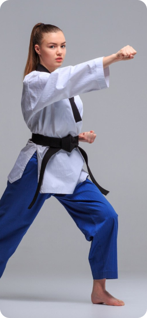

philosophy • Hapkido Philosophy • Hapkido Philosophy • Hapkido Philosophy


Hapkido Philosophy
The word, Hap-ki-do, literally translated, means coordination, power and way, Hap is coordination, ki denotes the essence of power, and do means the art, or method. Hapkido, the art of coordinated power.
The practitioner of hap-ki-do learns to apply all three of the principles in mastering his art. Central, and most important, is ki, the essence of power. It is gained by joining the mind and the body into one spiritual and physical unit.
The practitioner of hap-ki-do learns to apply all three of the principles in mastering his art. Central, and most important, is ki, the essence of power. It is gained by joining the mind and the body into one spiritual and physical unit.
There are three basic skills to be learned:
1
Non-resistance: Meet forces with minimum force to deflect and not to clash with an adversaries power.
2
Circular motion, countering and attacking.
3
The "water principle". Total penetration of an enemy defenses.

Non-resistance is a characteristic of Hapkido and one of the major areas where the art differs from its more traditional karate cousins. For example, in defending against a powerfully thrown punch, the Hapkido practitioner would never step inside his opponents area of greatest momentum and block with a hard right angle thrust. Instead, he would avoid a direct confrontation by stepping to the outside to parry the punch with a soft circular motion of the arm and hand. Once the power has been diverted, he would then be free to attack his opponents exposed side.
The same circle which allows the Hapkido practitioner to flow from one motion to the next without interruption, provides an unbroken line of continuous motion, power, and energy.
The circular method of attacking is the principle method of combat employed by predatory animals. An example would be a cat stalking and attacking its prey with its characteristic circular patterns.
Non-resistance is a characteristic of Hapkido and one of the major areas where the art differs from its more traditional karate cousins. For example, in defending against a powerfully thrown punch, the Hapkido practitioner would never step inside his opponents area of greatest momentum and block with a hard right angle thrust. Instead, he would avoid a direct confrontation by stepping to the outside to parry the punch with a soft circular motion of the arm and hand. Once the power has been diverted, he would then be free to attack his opponents exposed side.
The same circle which allows the Hapkido practitioner to flow from one motion to the next without interruption, provides an unbroken line of continuous motion, power, and energy.
The circular method of attacking is the principle method of combat employed by predatory animals. An example would be a cat stalking and attacking its prey with its characteristic circular patterns.